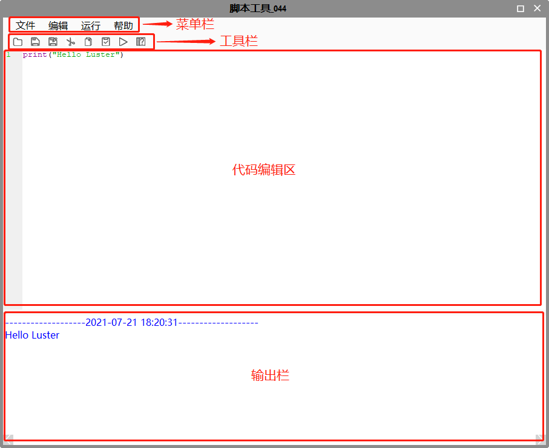

Giao diện nâng cao của công cụ script là giao diện chỉnh sửa mã nguồn, như hình dưới:

Hiện tại chỉ cung cấp menu Tệp và Chạy:
Menu Tệp
Mở: Mở tệp .py.
Lưu Ctrl + S: Cập nhật mã vào công cụ script.
Lưu thành: Lưu mã dưới dạng tệp .py mới.
Menu Chỉnh sửa: Tạm thời chưa có, sẽ được mở trong phiên bản tiếp theo.
Tìm Ctrl + F: Mở cửa sổ tìm kiếm.
Thay thế Ctrl + H: Mở cửa sổ thay thế.
Đánh dấu: Mở cửa sổ đánh dấu.
Đi tới Ctrl + G: Mở cửa sổ nhảy tới dòng.
Ghi chú Alt + 3: Ghi chú đoạn mã được chọn.
Bỏ ghi chú Alt + 4: Bỏ ghi chú đoạn mã đã chọn.
Cài đặt: Tạm thời chưa có, sẽ có trong phiên bản tiếp theo.
Chạy F5:
Trợ giúp
Mở
Mở tệp .py.
Lưu
Lưu mã vào công cụ script.
Lưu thành
Lưu mã thành tệp .py mới.
Cắt
Cắt đoạn mã được chọn.
Sao chép
Sao chép đoạn mã được chọn.
Dán
Dán mã.
Chạy
Chạy mã Python.
Mở trợ giúp
Mở tài liệu trợ giúp script.
Hiển thị tô màu (Highlight)
Từ khóa có màu cam nhạt:
Như "True False class return None if while"
Hàm có sẵn (built-in) màu tím:
Như "print list abs"
Số có màu xanh ngọc:
0 1 2 3 4 5 6 7 8 9
Ghi chú dòng và ghi chú khối có màu đỏ sẫm:
## Ghi chú dòng
### Ghi chú khối
Chuỗi có màu xanh lá cây:
1. Nháy đôi: "chuỗi abc123"
2. Nháy đơn: 'chuỗi abc123'
3. Ba nháy đơn: '''chuỗi abc123'''
4. Ba nháy đôi: """chuỗi abc123"""
Tên lớp và hàm có màu xanh dương:
class myClass:
def __init__:
Các phần còn lại là màu đen.
Phím tắt
Ctrl + F: Mở tìm kiếm.
Ctrl + H: Mở thay thế.
Ctrl + G: Mở nhảy dòng.
Ctrl + S: Lưu mã vào công cụ.
Alt + 3: Ghi chú đoạn mã.
Alt + 4: Bỏ ghi chú đoạn mã.
F5: Chạy mã.
Nếu có kết quả xuất ra, nó sẽ hiển thị ở khu vực xuất. Kết quả bình thường sẽ có màu xanh dương, nếu có lỗi sẽ hiển thị bằng màu đỏ.